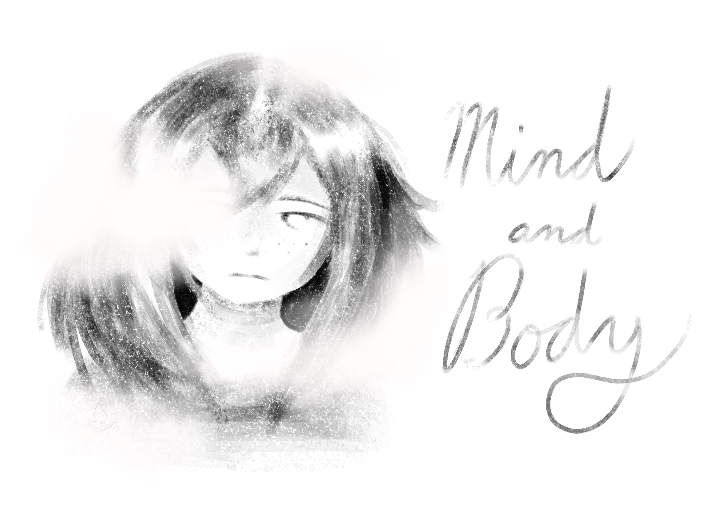

Mind and Body, a story told through hyperlinks written by Clare Patzoldt. The narrative focuses on a severe dissociative episode caused by stress and an intimidating task. It is inspired by Patzoldt's own experiences, and contains severe derealization and depersonalization. The story also contains several pieces of art, all of which were also drawn by Patzoldt. There are several routes that can be taken through the story, and two different endings. It asks you to consider what's more important; being productive, or your health?
You have something important you need to do.
It doesn't have to be worked on right now. You can do something else for a bit.
or
You should still get it done now. The sooner you do it, the better.